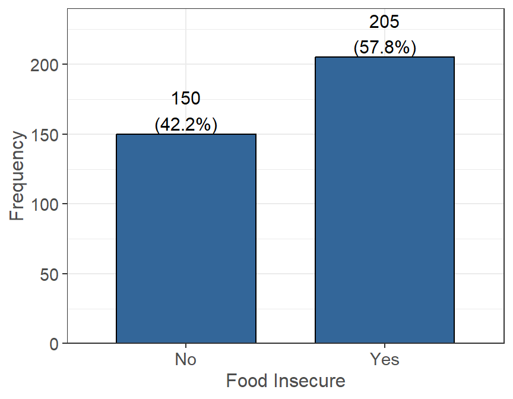
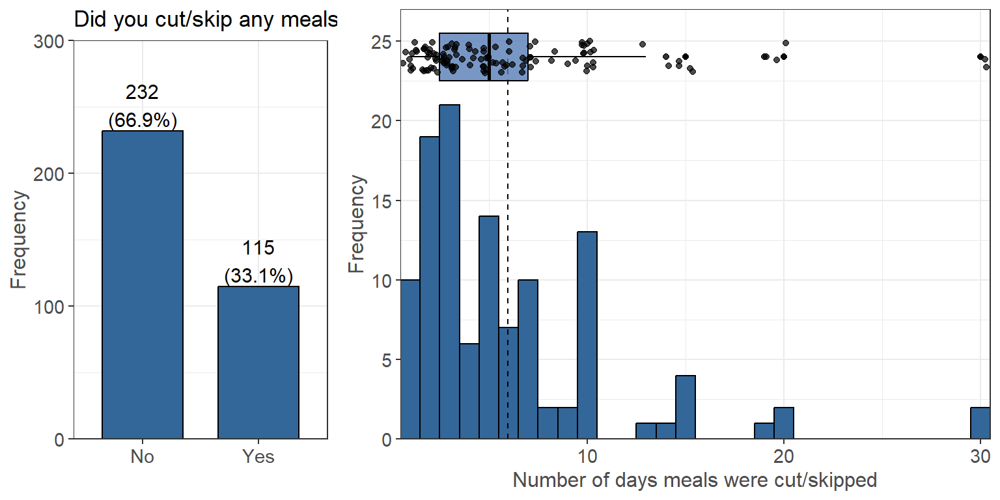

Food Security
The following questions were asked in regard to students’ feelings towards food security due to a lack of or no money. Students were asked in they had to cut or skip meals (and how often), went entire days without eating, and other situations due to a lack of money. Students were also asked how they handled situations when they had run out of money for food, and if they had gotten any assistance.
Food Eaten in Household
For the following statements, please state whether they were often true, sometimes true, or never true for you/your household in the last 30 days.
Household is determined by the number of people you purchase and prepare food with. This may or may not include your roommates. Figure 7.1: Food Eaten in Household
Eating Situations (Lack of Money)
The following are statements that people have made about their eating situations over the last 30 days:
Cut/Skip Meals
Did you ever cut the size of your meals or skip meals because there wasn’t enough money for food (n=347, 84% of 415 reporting). If yes, how many days did this happen (n=115, 28% of 415 reporting).  Figure 7.2: Cut/Skip Meal: Identification & Distribution
The majority of people claim that they did not have to skip meals due to not having enough money (232 people). However, 115 people claimed that they did have to skip meals due to not having enough money. Of the people that did skip meals, the average number of days where they had to skip/cut a meal (denoted by the dotted line) was 6 days, while the median was 5 days. The majority of the data is below 10 days, but a small amount of students did report skipping/cutting a meal more than 10 days in the last month.
No Food All Day
Did you ever not eat for a whole day because there wasn’t enough money for food (n=357, 86% of 415 reporting). If yes, how many days did this happen (n=38, 9% of 415 reporting).  Figure 7.3: No Food All Day: Identification & Distribution
Over the past 30 days at the time of the survey, 319 people claimed they did not have to skip eating for a full day due to not having enough money for food and 38 people claimed that they did skip eating for a full day. Of the people that did skip meals for an entire day, the average number of days where they had to skip/cut all meals (denoted by the dotted line) was 6 days, while the median was 4 days. The majority of the data is below 5 days, but a small amount of students did report skipping/cutting a meal more than 5 days in the last month.
More Eating Situations
Below are more questions asked in regards to the students eating situations due to lack of money.Note: these are a series of Yes/No questions with only the “Yes” responses being displayed along with the percent of the data it composes.
| Yes (%) | |
|---|---|
| Did you ever eat less than you/your household felt you/your household should because there wasn’t enough money for food (n = 347)? | 107 (30.8%) |
| Were you ever hungry but didn’t eat because there wasn’t enough money for food (n = 356)? | 86 (24.2%) |
| Did you lose weight because there wasn’t enough money for food (n = 331)? | 44 (13.3%) |
- When it comes to eating less because there was not enough money for food, 107 people claimed that they experienced this and 240 people claimed they did not experience this.
- When it comes to being hungry but not eating because there was not enough money for food, 86 people claimed that they experienced this and 270 people claimed they did not experience this.
- When it comes to losing weight because there was not enough money for food, 44 people claimed that they experienced this and 287 people claimed they did not experience this.
Ran Out of Money
In the last 30 days, if you ran out of money for food, what did you do? (choose all that apply):| Measure | Yes (%) |
|---|---|
| I did not run out of money for food | 203 (57.0%) |
| I used my credit card (not debit card) to buy food. | 92 (25.8%) |
| I started skipping meals. | 67 (18.8%) |
| My friends, family or roommates gave me money for groceries. | 55 (15.4%) |
| My friends, family or roommates fed me or took me out to eat. | 45 (12.6%) |
| I went to the food pantry or other free food organizations. | 39 (11.0%) |
| I can get free food/meals from my work. | 20 (5.6%) |
Funding
Partially funded by USDA SNAP, known in California as CalFresh, an equal opportunity provider and employer, and the California Department of Social Services. Any use of these results in further work must use the following citation:Center for Healthy Communities, "Basic Needs Survey", June 2021. Retrieved on xx-xx-xxxx from https://chicocalfresh.github.io/bns-pilot2-website/index.html